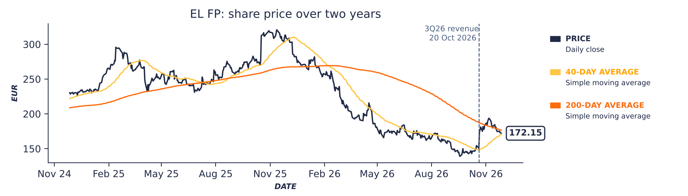
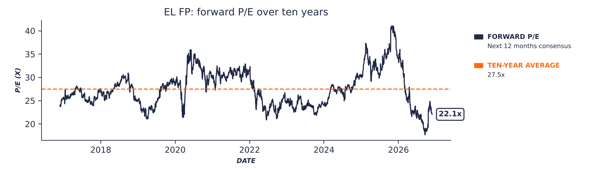
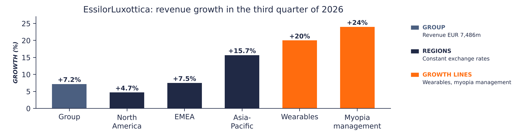

Ad-hoc opinion · Eyewear and medtech
Charts
Chart 1 · EL FP: share price over two years
Daily close with 40-day and 200-day simple moving averages, EUR, to 27 November 2026; the dashed line marks the third-quarter revenue release

Sources: Syz Research, Bloomberg, company data
Chart 2 · EL FP: forward P/E over ten years
Price over consensus earnings for the next twelve months, with the ten-year average

Sources: Syz Research, Bloomberg, company data
Chart 3 · EssilorLuxottica: revenue growth in the third quarter of 2026
Percent, constant exchange rates, as reported by the company

Sources: Syz Research, Bloomberg, company data